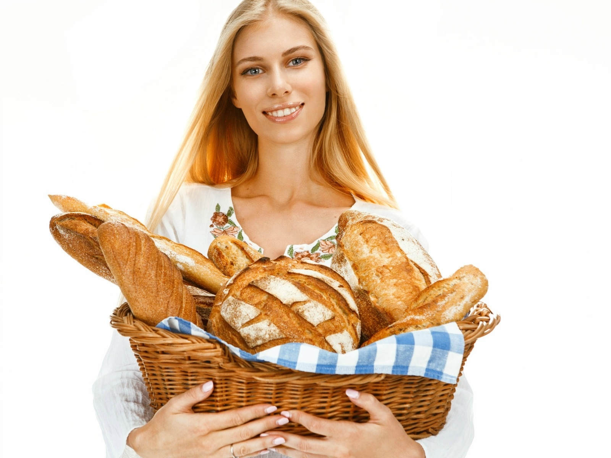

Troszkę o mnie
Czesć jestem Radek, od dziecka pasjonuje się wypiekami. Moje doświadczenie związane z tradycją wypieków to 20lat. Jestem też dziesięciokrotym zwycięscą Mięzynarodowego Europejskiego Konkursu w peieczeniu chleba. Założyłem tą stronę aby podzielić się moim doświadczeniem o piekarstwie. Zapraszam Serdecznie! :)
Troszkę o mnie
Czesć jestem Radek, od dziecka pasjonuje się wypiekami. Moje doświadczenie związane z tradycją wypieków to 20lat. Jestem też dziesięciokrotym zwycięscą Mięzynarodowego Europejskiego Konkursu w peieczeniu chleba. Założyłem tą stronę aby podzielić się moim doświadczeniem o piekarstwie. Zapraszam Serdecznie! :)
Przepisy
Dodaj przepis
Galeria

Kontakt